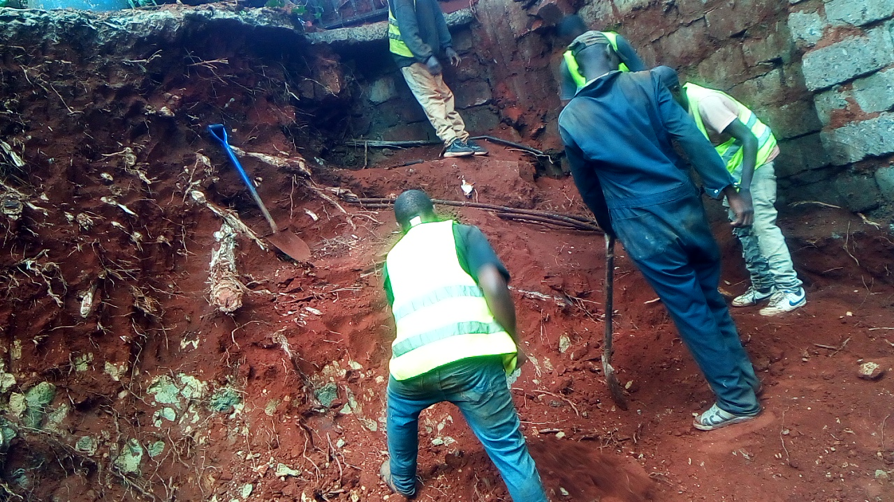
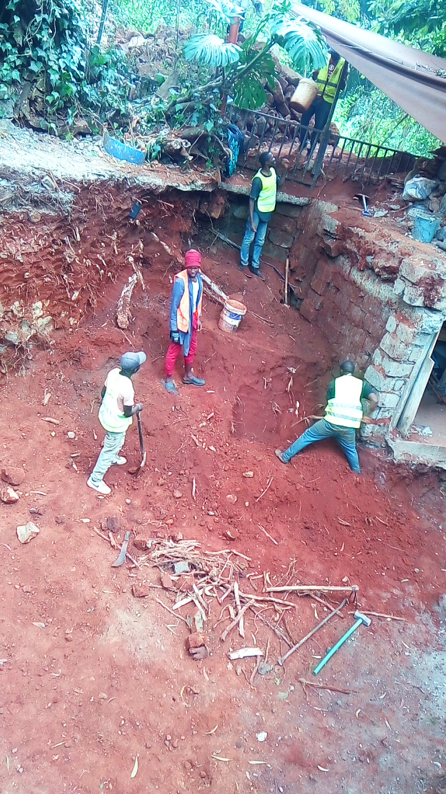

Mucheru World of Golf
Comprehensive golf course civil works, precision topographical engineering, boundary hedge establishment, and green foundation construction advanced at Mucheru World of Golf under the active supervision of Mr. Gichuhi and Ken:
- Delivery & Staging of Golf Course Hedge Plants: A major consignment of potted hedge seedlings was delivered on site via an Isuzu box cargo truck. Field personnel offloaded and systematically staged the plants in nursery polybags under the natural shade of fairway trees, ensuring proper hydration and protection prior to transplanting along the designated course perimeter.
- Boundary Hedge Trench Layout & Marking: Ground teams applied high-visibility white lime chalk lines running precisely parallel to the perimeter wire mesh fence, establishing an accurate, straight corridor for the linear hedge planting trenches.
- Hedge Planting Trench Excavation (In Progress): Labor crews initiated linear trench digging along the marked boundary corridor, excavating and loosening topsoil beside the boundary access track in preparation for receiving the newly delivered hedge plants.
- High-Precision GNSS/RTK Dam Level & Embankment Mapping: A specialized engineering survey team deployed high-precision RTK GNSS rover poles and digital data collectors to survey elevation benchmarks, water containment profiles, and perimeter embankment levels across the excavated golf course dams (Dam 1 and Dam 2).
- Complete Spatial Mapping of Course Irrigation Network: Surveyors executed comprehensive geo-referencing and mapping of all irrigation network assets across the golf course, recording precise spatial coordinates for pipeline junction points, mainline routes, lateral takeoff nodes, and sprinkler head locations.
- Spreading of Red Volcanic Loam Across Green No. 13 & 18: Ground personnel utilized shovels, wheelbarrows, and manual grading rakes to distribute voluminous mounds of fertile red volcanic topsoil across the foundation basins, aprons, and collars of Greens 13 and 18, establishing the necessary topsoil bed above the underlying rock sub-base.
- Manual Fracturing of Hardcore Rocks in Greens 13 & 18: Field laborers equipped with heavy sledgehammers systematically fractured oversized hardcore rock aggregates within the geotextile-lined foundation basins of Greens 13 and 18, reducing rock dimensions to achieve optimum void compaction and stable subsurface drainage permeability.
Key Accomplishments — Mucheru World of Golf
Boundary hedge seedlings delivered and safely staged under fairway shade; perimeter hedge trench alignment marked with chalk and trenching commenced; comprehensive RTK GPS topographical mapping concluded for dam levels and all course irrigation points; red volcanic topsoil spread across Greens 13 & 18; and manual rock fracturing completed to stabilize green sub-bases.
Comprehensive field progress video documenting September 9 operations at Mucheru World of Golf, showcasing hedge plant delivery, perimeter trench preparation, GPS survey mapping, and green foundation earthworks:
🎥 Mucheru World of Golf — Daily Operations & Course Progress
Comprehensive field progress video documenting September 9 operations at Mucheru World of Golf, showing delivery of hedge plants, GPS dam and irrigation mapping, red soil spreading, and rock fracturing on Greens 13 & 18.
Field photographic evidence sequentially documenting hedge plant logistics, boundary trench excavation, engineering survey mapping, and Green 13 & 18 foundation construction:

Boundary Hedge Delivery — Offloading Consignment
Field personnel unloading potted hedge seedlings from an Isuzu commercial cargo truck stationed along the course boundary track.

Hedge Seedlings Staged Under Fairway Trees
Extensive batch of healthy potted hedge plants neatly organized in nursery polybags under tree canopy shade to retain root moisture prior to planting.

Aerial Survey — Trench Corridor Alignment
High-altitude aerial capture displaying the straight white lime chalk alignment marking the dedicated hedge planting trench corridor parallel to the wire boundary fence.

Ground Perspective — Trench Corridor Marking
Linear perspective along the boundary fence posts showing high-contrast white chalk alignment established for the ongoing hedge trenching operations.

Boundary Perimeter Trenching Underway
Labor personnel actively digging the linear planting trench along the boundary perimeter fence line beside the access road.

Aerial View — Linear Hedge Trench Excavation
Overhead perspective illustrating laborers with shovels and pickaxes cutting the hedge trench directly along the boundary fence line.

Precision Dam Topography & Level Mapping
Engineering survey crew utilizing an RTK GNSS rover pole and digital controller to record critical embankment elevation levels across the course dam.

Course Irrigation Network — Spatial Mapping
Survey personnel logging exact geospatial coordinates for all fairway and green irrigation points, valves, and takeoff junctions across the course.

Green Sub-Base — Sledgehammer Rock Fracturing
Laborers manually fracturing oversized hardcore rock aggregates with sledgehammers to key the sub-base foundation inside Greens 13 and 18.

Aerial View — Green Foundation & Soil Distribution
High-resolution drone capture showcasing the defined putting green perimeter edging, compacted hardcore stone core, and red volcanic topsoil spreading.

Manual Red Volcanic Soil Spreading & Leveling
Ground crew utilizing shovels to distribute high-grade red volcanic loam across the green perimeter and sub-base foundation.
Chaka Farms
Daily livestock dairy production, working dog socialization and conditioning, residential lawn care, and farm compound maintenance were executed methodically across Chaka Farms:
- Dairy Milking Production (Kamandau): Daily dairy cow milking operations achieved a total gross production of 6.0 Litres, recorded strictly in Litres with 3.5L obtained in the morning and 2.5L in the evening.
- Reconciliation of Milk Allocations & Farm Reserve: Authorized milk deductions drawn out of the total yield totaled 2.0 Litres, comprising 1.0 Litre for goat kids (0.5L morning + 0.5L evening), 0.5 Litres allocated to Gladys, and 0.5 Litres allocated to Kamau. The resulting net farm milk reserve stood at 4.0 Litres.
- Morning Pasture Socialization with Goat Flock (Willy): Working canine unit dogs Mali, Zara, and Logan were taken into the open farm pastures during morning grazing to socialize calmly and peacefully alongside the goat flock, reinforcing gentle, non-reactive behavior around livestock.
- Canine Paw Command Conditioning: Willy conducted structured individual training drills reinforcing the "Paw" cue to strengthen canine handler focus, tactile trust, and responsive obedience.
- Kennel Hygiene & Sanitation Routine: Comprehensive daily cleaning, washing, and sanitization of the kennel blocks and sleeping quarters were executed to maintain superior kennel biosecurity.
- Off-Leash Farm Exploration & Exercise: All canine unit dogs enjoyed structured off-leash walking, free galloping, and farm exploration across the farm acreage, promoting canine mental enrichment and physical stamina.
- Main House Entrance Lawn Irrigation: Willy coordinated with Kimondo to thoroughly water the lawn turf situated immediately outside the main house entrance door, sustaining healthy grass growth during dry weather conditions.
- Exterior Perimeter Fence Flower & Hedge Trimming: Grounds maintenance personnel trimmed and neatened the flower beds and ornamental hedges along the exterior side of the Chaka Farms boundary fence fronting the public access road.
- General Compound Cleanliness & Upkeep (Margaret & Monica): Margaret and Monica performed comprehensive farm compound sweeping, garden litter collection, and general facility grounds upkeep throughout the day.
Key Accomplishments — Chaka Farms
Dairy milking reconciled at 6.0L gross with 4.0L net reserve; canine flock socialization with Mali, Zara & Logan completed successfully in grazing pastures; paw command conditioning and kennel sanitation executed; house entrance lawn irrigated; exterior boundary hedges trimmed; and compound cleanliness maintained.
Quantitative daily milk production log recorded strictly in Litres (L). Allocations to goat kids and staff represent disbursements drawn out of total gross yield:
| Item / Description | Morning (L) | Evening (L) | Total (L) | Deduction (L) | Farm Balance (L) |
|---|---|---|---|---|---|
| Cow Milking Yield (Gross Production) | 3.5 L | 2.5 L | 6.0 L | — | 6.0 L |
| Goat Kids Ration | 0.5 L | 0.5 L | 1.0 L | - 1.0 L | — |
| Staff Allocation — Gladys | — | — | 0.5 L | - 0.5 L | — |
| Staff Allocation — Kamau | — | — | 0.5 L | - 0.5 L | — |
| Net Farm Milk Balance | 3.5 L Morning | 2.5 L Evening | 6.0 L Gross | - 2.0 L Total Deductions | 4.0 L Net |
Production & Allocation Reconciliation
Total gross milk production stood firmly at 6.0 Litres (3.5L morning + 2.5L evening). Following authorized disbursements of 1.0 Litre to goat kids (0.5L morning + 0.5L evening), 0.5 Litres to Gladys, and 0.5 Litres to Kamau, total deductions equaled 2.0 Litres, preserving an exact net remaining farm balance of 4.0 Litres.
Disciplined working canine training, livestock socialization, facility hygiene, and grounds maintenance were executed systematically under dedicated supervisory oversight:
- Livestock Pasture Socialization: Working dogs Mali, Zara, and Logan practiced calm socialization while grazing alongside goats in the farm paddocks, establishing solid handler control in the presence of farm livestock.
- Paw Command Conditioning & Manners: Handler Willy worked with dogs on structured manners drills including paw commands, patience at kennel doors, and controlled calm responses.
- Kennel Hygiene & Cleanliness: Complete sanitization, scrubbing, and hosing of all kennel stalls to maintain optimal sanitary conditions.
- Off-Leash Exercise: All canine unit dogs completed structured off-leash perimeter walking and free running across the farm fields.
- Main House Entrance Lawn Irrigation: Lawn grass directly fronting the main residential door was thoroughly irrigated by Willy and Kimondo.
- Compound Upkeep & Exterior Hedge Trimming: Margaret and Monica maintained compound cleanliness and swept pathways, while exterior fence hedge and flower borders along the farm perimeter road were neatly trimmed.
🎥 Canine Unit Routine — Kennel Manners & Obedience Training
Field video recording documenting kennel manners, patience discipline, and handler obedience during kennel entry and exit under Willy's guidance.
Field photographic evidence documenting grounds upkeep, perimeter hedge maintenance, and compound border neatening:

Exterior Perimeter Fence — Hedge & Flower Trimming
Long perspective along the exterior boundary fence line showing freshly trimmed hedge foliage and cleared ground bordering the farm road.
Kabete Residence
Extensive civil earthworks, fireplace terrace excavation, garden paving rehabilitation, and subterranean utility identification were executed at Kabete Residence, with operations overseen and field updates shared by Njoki:
- Outdoor Fireplace Pit Ground Expansion (In Progress): Excavation personnel in reflective safety vests advanced deep earthworks at the sunken outdoor fireplace terrace, excavating the compacted red subsoil bank below the stone retaining wall and metal railing to substantially widen the usable terrace floor.
- Tree Root Cutting & Soil Hacking at Fireplace: Ground workers systematically chopped, cut, and extracted thick mature tree roots exposed during excavation, utilizing pickaxes and mattocks to loosen dense subterranean clay formations.
- Clearance & Orderly Stacking of Demolition Hardcore Rocks (In Progress): Substantial quantities of red demolition building stones, broken bricks, and concrete hardcore rubble excavated from the fireplace area were sorted, cleared from the working pit, and neatly stacked along the garden boundary.
- Playground Topsoil Leveling (In Progress): Ground laborers shoveled, spread, and leveled fresh mounds of red volcanic topsoil across the residential playground lawn area situated between the stone garden stairway and tropical ornamental border.
- Ground Hacking & Clod Loosening in Playground Area: Workers manually hacked the compacted playground earth with pickaxes (jembes) to break down hard crusts and achieve a smooth, permeable grade suitable for lawn re-establishment.
- Lifting & Raising Mazeras Stone Garden Pavers: Craftsmen lifted natural Mazeras stone stepping slabs along the garden lawn walkway, carefully packing red soil underneath to raise and level each flagstone flush with the adjacent turf surface.
- Subterranean Utility Discovery — Three-Phase Electrical Cables: During manual excavation and soil hacking near the fireplace terrace, workers uncovered three heavy underground three-phase electrical power transmission cables embedded in the soil. Hand excavation protocols were immediately enforced to safeguard cables and ensure complete site safety.
Key Accomplishments — Kabete Residence
Outdoor fireplace terrace expanded and cleared of roots and rubble; demolition hardcore rocks sorted and stacked along boundary; playground lawn soil hacked and leveled; Mazeras stone stepping pavers raised flush with lawn grade; and underground three-phase power cables safely identified and protected.
Operational safety alert and civil excavation update regarding subterranean infrastructure encountered during residential groundworks:
Critical Subterranean Discovery — Three-Phase Electrical Cables
During ground hacking and earth excavation at the outdoor fireplace perimeter, three heavy armored three-phase electrical cables were uncovered embedded directly in the subsoil. Work protocols were immediately adjusted: all mechanized or heavy pickaxe hacking in the immediate vicinity has been halted in favor of cautious manual hand clearance to avoid puncturing insulation jackets or disrupting residential electrical supply.
Protective Measures & Civil Coordination
The uncovered three-phase cables will be surveyed, charted on site layout plans, and fitted with protective sand bedding and concrete warning slabs prior to backfilling to prevent accidental damage during future landscaping or structural masonry construction.
Field photographic evidence sequentially documenting playground leveling, ground hacking, Mazeras paving elevation, fireplace excavation, and uncovered electrical cables:

Playground Area — Red Soil Leveling & Grading
Ground laborers using shovels and rakes to level and grade red volcanic soil across the playground lawn adjacent to the stone garden stairway.

Compacted Earth Hacking & Soil Preparation
Field laborer hacking the hard-packed red ground with a jembe pickaxe to break up compacted soil clods for smooth surface leveling.

Mazeras Stone Stepping Pavers — Raising & Leveling
Ground crew carefully lifting natural Mazeras stone slabs and adding red soil underneath to raise and level each paver flush with the lawn.

Fireplace Hardcore Clearance & Sorting
Neatly piled red demolition bricks, hardcore rocks, and masonry rubble excavated from the sunken fireplace pit and staged for clearing.

Retaining Wall Base — Excavation & Debris Clearance
Excavation team in safety gear digging out compacted soil and masonry fragments alongside the stone foundation wall.

Fireplace Terrace — Ground Expansion Earthworks
Workers digging deep into the red subsoil bank below the upper terrace railing to expand the structural footprint of the fireplace.

Fireplace Pit — Root Clearing & Pit Deepening
Overview of the active excavation pit showing laborers clearing severed tree roots, hacking dense red earth, and leveling the sunken fireplace floor.

Subterranean Utility — Three-Phase Electrical Cables
Exposed trio of armored three-phase electrical power cables uncovered embedded within the red soil during fireplace groundworks.